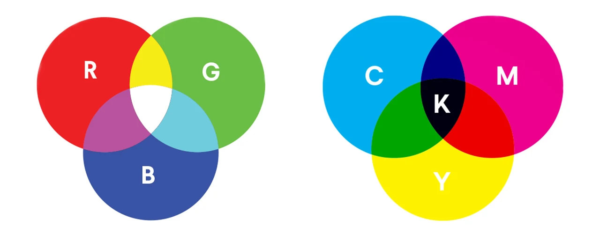

Dit systeem wordt gebruikt kleuren te maken met gebruik van een code. RGB's staan voor de volgende kleuren: rood, groen en blauw. Deze 3 kleuren kunnen miljoenen andere kleuren maken. Zwart is basiskleur, en rood groen blauw zijn de kleurcomponenten. Het RGB-model kan je bijvoorbeeld terugvinden op de televisie of op je computer. Als je heel veel zou inzoomen, dan zou je allemaal stippen zien. Dit noemen we pixels. Pixels zijn dus kleine, gekleurde punten die je scherm opbouwen. Hoe meer pixels, hoe scherper je beeld is.
Dit systeem wordt gebruikt bij drukkerijen en dus niet op beeldschermen. CMY-K staan voor de volgende kleuren: cyaan, magenta, geel (yellow) en key (dit is zwart).